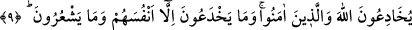

Hükümdar, şeyhin yüce bir zât olduğunu bildiği için, bu konuda biraz duraksadı. Sonra
şeyhi sorgulamak üzere bir hâkim ve fukahâdan bâzı kimseler gönderdi. O imtihân
edilen mürîd de şeyh hakkında ileri geri söylenip duruyordu. Durumu öğrenmek üzere
çuvalı çıkarmak zorunda kaldılar. Boğazlanıp çuvala konarak defnedilenin müridlerden
biri değil, koç olduğunu gördüler. Daha sonra gizlenen mürîd de çıkıp geldi. Kendisini
emîn sanan kişi ise rezîl olup gözden düştü. Yaptığına pişman oldu. Ancak bu noktada
pişmanlık fayda vermezdi. Bu hikâye, Şeyh-i Ekber Muhyiddîn İbn Arabî’nin “el-
Emru’l-Muhkemu’l-Merbût fîmâ yelzemu ehle’t-tarîki mine’ş-şurût” isimli
risâlesinde zikredilmiştir. Bu hikâyeden anlaşıldığına göre, sırlar ancak emîn kimselere
verilir ve nûrlar ancak edebli olanlara akıtılır.
Hâfız (k.s.) der ki:
Ben “dost” diye, ancak Hz. Dost’a yâni Hakk’a derim.
Çünkü dost, dost sözünü korur, başkasına söylemez.
et-Te’vîlâtü’n-Necmiyye’de şöyle denilmiştir: Âyette zikredilen insanlardan maksad;
Allah’ı ve misak günü O’na verdikleri sözü unutanlardır. Bunlardan bir kısmı, biz
Allah’a ve âhırete inandık, derler. Bunlar kalblerinde bulunmayan şeyi ağızlarıyla
söylemektedirler. Çünkü hakîkî îmân, ancak Allah’ın seçkin kullarının kalbine attığı
nûrdan olan îmândır. Yâni kişi Allah’ın nûru ile âhıreti müşâhede eder ve ona inanır.
Allah’ın nûru ile bakmayan ise gayb âlemini müşâhede edemez ve gaybı bilemez.
Dolayısıyla Allah’a ve âhıret gününe inanmış olamaz. İşte bu sebeble “Onlar
mü’minler değillerdir.” buyurulmuştur. Yâni onlar Allah’ın nûru ile bakıp hakîkî îmâna
kavuşanlardan değillerdir. Diğer bir mânâya göre onlar, hakîkî îmânı elde etmeye hâzır
değillerdir. Çünkü onlar derin bir gaflet ve şaşkınlık içindedirler.
9. Onlar (kendi akıllarınca) gûyâ Allah’ı ve mü’minleri aldatırlar. Halbuki onlar
ancak kendilerini aldatırlar ve bunun farkında değillerdir.
Bu âyet-i kerîme ya önceki âyette inanmadıkları halde Allah’a ve âhıret gününe îmân
ettiklerini söyleyenlerin, bunu sırf Allah’ı ve mü’minleri aldatmak için yaptıklarını
açıklamakta ve onların bu kötü maksadlarını kınamaktadır. Veya önceki âyetle mânâ
yönüyle bağlantılı olmayıp, “onlara ne oluyor ki mü’min olmadıkları halde böyle
söylemek mecbûriyetini hissediyorlar?” şeklinde mukadder bir soruya cevap olarak
zikredilmiş ve “onlar bu yolla Allah’ı ve mü’minleri aldatmak istiyorlar” mânâsınadır.
Allah’ı aldatıyor olmaları, zâhirî mânâsına hamledilemez. Münâfıkların Allah’ı
aldatmaları gerçek mânâda değildir. Çünkü Allah için gizli hiçbir şey yoktur.